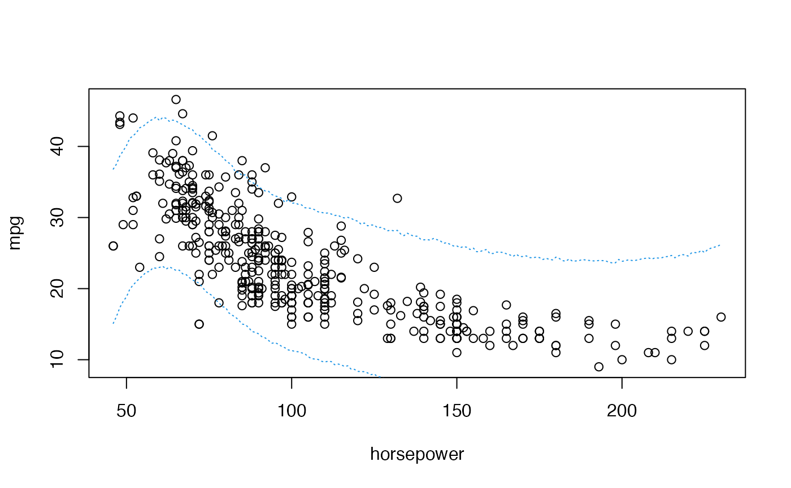

Simulation-based inference in a Bayesian spline model
Introduction
We resume the analysis of the Auto data set of the
ISLR library from the previous practical session. We are
again interested in explaining the fuel consumption of the cars
(variable mpg) as a function of their power
(horsepower).
We start by loading the data and redoing the frequentist fit from the previous session:
library(splines)
library(LaplacesDemon)
data("Auto", package = "ISLR")
summary(Fit1)##
## Call:
## lm(formula = mpg ~ bs(horsepower, df = 5), data = Auto)
##
## Residuals:
## Min 1Q Median 3Q Max
## -15.7196 -2.6119 -0.2532 2.2002 15.3446
##
## Coefficients:
## Estimate Std. Error t value Pr(>|t|)
## (Intercept) 33.024 1.712 19.290 < 2e-16 ***
## bs(horsepower, df = 5)1 5.682 2.611 2.176 0.0301 *
## bs(horsepower, df = 5)2 -8.368 1.740 -4.810 2.17e-06 ***
## bs(horsepower, df = 5)3 -17.284 2.715 -6.366 5.53e-10 ***
## bs(horsepower, df = 5)4 -23.210 2.956 -7.852 4.10e-14 ***
## bs(horsepower, df = 5)5 -18.937 2.694 -7.029 9.49e-12 ***
## ---
## Signif. codes: 0 '***' 0.001 '**' 0.01 '*' 0.05 '.' 0.1 ' ' 1
##
## Residual standard error: 4.29 on 386 degrees of freedom
## Multiple R-squared: 0.7017, Adjusted R-squared: 0.6979
## F-statistic: 181.6 on 5 and 386 DF, p-value: < 2.2e-16
plot(mpg ~ horsepower, data = Auto)
lines(46:230, predict(Fit1, data.frame(horsepower = 46:230)), col = 2, lwd = 2)
We will now assume that we have prior information on the parameters of this analysis. That prior information may be summarised in the following conjugate prior: \[\pi(\boldsymbol{\beta},\,\sigma^2)\sim \mathcal{N}_6(\boldsymbol{\beta}\mid\mathbf{0}_6,\, 5\sigma^2\mathbf{I}_6)\text{IG}(\sigma^2\mid 10,300)\]
Posterior distribution for the model parameters
As mentioned in the theoretical session, the posterior distribution of this parameter under this model is:
\[\pi(\boldsymbol{\beta} \mid \sigma^2,\boldsymbol{y})\sim \mathcal{N}_{p+1}\left((\boldsymbol{S}^{-1}+\boldsymbol{X}'\boldsymbol{X})^{-1}(\boldsymbol{X}'\boldsymbol{y}+\boldsymbol{S}^{-1}\boldsymbol{m}),\sigma^2(\boldsymbol{S}^{-1}+\boldsymbol{X}'\boldsymbol{X})^{-1}\right)\] and \[\pi(\sigma^2|\boldsymbol{y})\sim \text{IG}\left(a+\frac{n}{2},\, b+\frac{s_e^2+(\boldsymbol{m}-\hat{\boldsymbol{\beta}})'(\boldsymbol{S}+(\boldsymbol{X}'\boldsymbol{X})^{-1})^{-1}(\boldsymbol{m}-\hat{\boldsymbol{\beta}})}{2}\right)\]
for \(\textbf{m}=\textbf{0}_6\), \(\textbf{S}=5\cdot\textbf{I}_6\), \(a=10\) and \(b=300\). Unlike Jeffreys’ prior, for this model no analytical expression can be deduced for the marginal posterior distribution \(\pi(\boldsymbol{\beta}\mid\mathcal{D})\), so the practical use of this model becomes quite complicated.
Analytical inference
We are going to generate functions for calculating the posterior distributions \(\pi(\sigma^2\mid \mathcal{D})\), \(\pi(\boldsymbol{\beta}\mid \sigma^2, \mathcal{D})\), \(\pi(\boldsymbol{\beta}, \sigma^2 \mid \mathcal{D})\)
X <- cbind(rep(1, nrow(Auto)), basis)
y <- matrix(Auto$mpg, ncol = 1)
betahat <- matrix(Fit1$coefficients, ncol = 1)
RSS <- sum(residuals(Fit1)^2)
# P(sigma^2|y)
Psigma2 <- function(sigma2) {
dinvgamma(
sigma2,
shape = 10 + nrow(Auto) / 2,
scale = 300 + RSS / 2 +
(t(betahat) %*% solve(5 * diag(6) + solve(t( X ) %*% X)) %*% betahat) / 2
)
}
# P(beta|sigma^2,y)
PBetaGivenSigma2 <- function(beta, sigma2) {
dmvn(
beta,
mu = as.vector(solve(diag(6) / 5 + t(X) %*% X) %*% (t(X) %*% y)),
Sigma = sigma2 * solve(diag(6) / 5 + t(X) %*% X)
)
}
# P(beta,sigma^2|y)
JointPosterior <- function(beta, sigma2) {
P1 <- Psigma2(sigma2)
P2 <- PBetaGivenSigma2(beta, sigma2)
P1*P2
}We can use these functions to plot, for example, the posterior marginal distribution of \(\sigma^2\), \(\pi(\sigma2\mid\mathcal{D})\):
curve(
Psigma2(x),
col = "darkgreen", lwd = 4,
xlim = c(10, 30),
xlab = expression(paste("Residual variance ", sigma^2)),
ylab = 'posterior marginal density'
)
However, the marginal posterior distribution of \(\boldsymbol{\beta}\), \(\pi(\boldsymbol{\beta}\mid \mathcal{D})\) is not analytic. We know the conditional posterior distribution of \(\pi(\boldsymbol{\beta} \mid \sigma^2, \mathcal{D})\), i.e., we know that distribution for given values of \(\sigma^2\) but not for unknown values of this parameter. Possibly, simulation in this context could make things much easier.
Simulation-based inference
We could use the composition method in order to draw samples of \(\pi((\boldsymbol{\beta},\sigma^2)\mid \mathcal{D})\). This could be done as follows:
sigma2.sample <- rinvgamma(
10000,
10 + nrow(Auto) / 2,
300 + (RSS + t(betahat) %*% (diag(6) + solve(t(X) %*% X)) %*% betahat) / 2
)
## Sample from the multivariate conditional posterior of beta, given sigma2
rbeta_cond <- function(sigma2) {
rmvn(
1,
as.vector(solve(diag(6) + t(X) %*% X) %*% (t(X) %*% y)),
sigma2 * round(solve(diag(6) + t(X) %*% X), 5)
) |>
as.numeric() |>
setNames(paste("beta", 1:6, sep = "_"))
}
beta.sample <- t(Vectorize(rbeta_cond)(sigma2.sample))
posterior.sample <- cbind(beta.sample, sigma2 = sigma2.sample)With this, we have 10000 draws of the joint posterior distribution of \(\pi((\boldsymbol{\beta},\sigma^2)\mid \mathcal{D})\) and, from that sample, we could evaluate what we found of interest from these parameters. For example:
## beta_1 beta_2 beta_3 beta_4 beta_5 beta_6 sigma2
## 25.99 14.05 -1.53 -10.33 -14.97 -11.07 28.08## beta_1 beta_2 beta_3 beta_4 beta_5 beta_6 sigma2
## 1.49 2.34 1.68 2.47 2.86 2.58 1.98## beta_1 beta_2 beta_3 beta_4 beta_5 beta_6 sigma2
## 1.00 1.00 0.18 0.00 0.00 0.00 1.00In addition, we can also evaluate some unconventional hypothesis tests, such as \(\beta_1>\beta_5\) by means of the corresponding probability observed in the posterior sample:
mean(posterior.sample[, 1] > posterior.sample[, 5])## [1] 1We can also obtain a distribution of the rank of each of the coefficients of \(\boldsymbol{\beta}\) in relation to the rest of the components
## $beta_1
##
## 4 5
## 4 9996
##
## $beta_2
##
## 4 5
## 9996 4
##
## $beta_3
##
## 2 3
## 4 9996
##
## $beta_4
##
## 1 2 3
## 1302 8694 4
##
## $beta_5
##
## 1 2
## 8698 1302or normalize the coefficients according to the standard deviation of the error (taking into account the uncertainty of that standard deviation):
## beta_1 beta_2 beta_3 beta_4 beta_5 beta_6
## Min. 3.704746 1.134505 -1.46802673 -3.5671154 -4.9188672 -4.0477337
## 1st Qu. 4.693084 2.352847 -0.50090949 -2.2701497 -3.2058551 -2.4233428
## Median 4.912694 2.659202 -0.28670181 -1.9571541 -2.8320891 -2.0925802
## Mean 4.913810 2.656859 -0.28866729 -1.9535738 -2.8313140 -2.0921739
## 3rd Qu. 5.134485 2.955790 -0.07449763 -1.6439581 -2.4552945 -1.7577148
## Max. 6.241930 4.372935 1.01505922 -0.2789592 -0.7210812 -0.3259303But, beyond the parameters of the model, we could take advantage of these samples to make inference about quantities of even greater interest such as, for example, the curve describing the relationship between the two variables. Thus, we can plot the posterior mean of the curve, and even assess its variability, by calculating the curve for each of the samples drawn from \(\pi((\boldsymbol{\beta},\sigma^2)\mid \textbf{y})\):
plot(mpg ~ horsepower, data = Auto)
# Posterior mean curve
values <- seq(min(Auto$horsepower), max(Auto$horsepower), 1)
posterior.mean.curve <- as.vector(cbind(rep(1,length(values)), predict(basis,newx = values))
%*%matrix(apply(posterior.sample[,1:6], 2, mean),ncol=1))
lines(values, posterior.mean.curve, col = 2, lwd = 2)
# 95% credible band for the curve
posterior.curve <- t(cbind(rep(1,length(values)),predict(basis,newx= values))
%*%t(posterior.sample[,1:6]))
posterior.IC.curve <- apply(posterior.curve, 2, function(x){quantile(x, c(0.025,0.975))})
lines(values, posterior.IC.curve[1,], col = 3, lwd = 1.5, lty = 2)
lines(values, posterior.IC.curve[2,], col = 3, lwd = 1.5, lty=2)
Predictive inference
For given values of \(\boldsymbol{\beta}\) and \(\sigma^2\) we would know the predictive
distribution of y for a given value of
horsepower: \[\pi(y^*\mid
\hat{\beta},\hat{\sigma}^2)=N(y^*|\textbf{x}^*\cdot\hat{\beta},\hat{\sigma}^2)\]
In that case we could use the composition method to sample values of a
new hypothetical \(y^*\) for any given
value of horsepower and the sampled values \(\{(\beta_1,\sigma_1^2),\ldots,(\beta_n,\sigma_n^2)\}\).
SampleY <- function(at){
mu <- beta.sample%*%matrix(c(1, predict(basis,newx = at)), ncol = 1)
rnorm(nrow(mu), mu, sqrt(sigma2.sample))
}
samples <- sapply(values, SampleY)With these values of the predctive distribution we can even plot prediction bands for the weights:
quantiles <- apply(samples, 2, quantile, c(0.025,0.975))
plot(mpg ~ horsepower, data = Auto)
lines(values, quantiles[1,], col = 4, lty = 3)
lines(values, quantiles[2,], col = 4, lty = 3)
Analytical inference on this predictive distribution is quite complicated, if possible.
Time to individual work
We propose below an individual exercise that pursues to consolidate the basic concepts that we have learned in the previous theoretical session and that we have been practising in this session.
Exercise
We return to the analysis of the dataset Weights by age
and ethnicity of the children. Perform simulation-based inference on
this data set assuming a non-informative Jeffreys’ prior for the
parameters. Assess the probability that a 10-year-old child weighs more
than 30 (kg.).